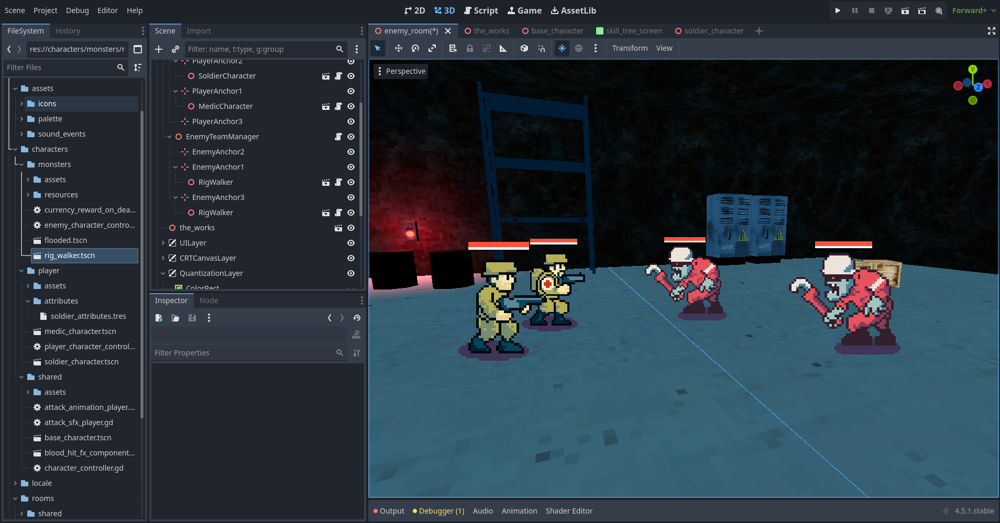
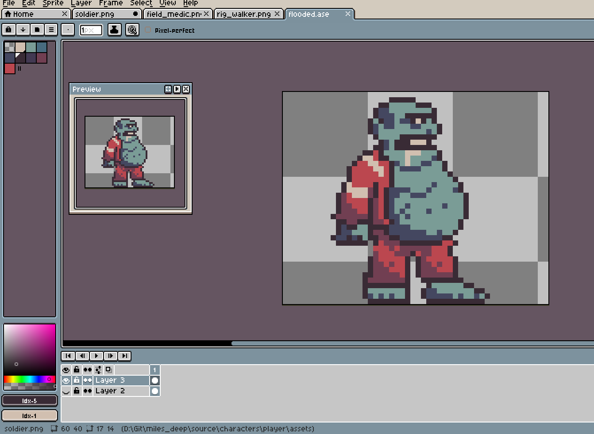

Time Feels Different Now
June 11, 2026
Do I wish I had more free time? Absolutely.
Would I go back to the days when I had plenty of it? Not a chance.
Apart from the occasional sore back and the growing suspicion that I injured myself by sleeping in a slightly unusual position, getting older has been great.
One of the biggest changes is how I value my time. When I was younger, free time felt endless. There would always be another weekend, another evening, another summer. Time was something I spent without thinking much about it.
These days I see it differently.

Not in philosophical kind of way, but I have become much more aware that time is finite. As a result, I try to make better use of the little free time I have. That's easier said than done, of course.
I use Trello to organize my ideas, tasks, and rough time estimates. I'm consistently optimistic with those estimates. Visuals, in particular, always take much longer than I think they will. Still, having a plan is better than staring at a blank evening wondering where the time went.
Knowing my strengths and (many) weaknesses helps too.

I enjoy spending time in Blender, and I get to be quite productive at it, but when it comes to pixel art I still have a looong way to go. Even the simplest sprites take me far longer than they should.
The funny thing is that I don't mind.
Learning a new skill is slow, frustrating, and occasionally humbling, but it's also one of the most rewarding parts of making games. Every sprite is slightly better than the last one. Every mistake teaches me something.
Progress is measured in months instead of days, but progress is still progress.
Maybe that's another thing that comes with age: becoming more comfortable with slow improvement. I have less time than I used to. I just appreciate it a lot more.